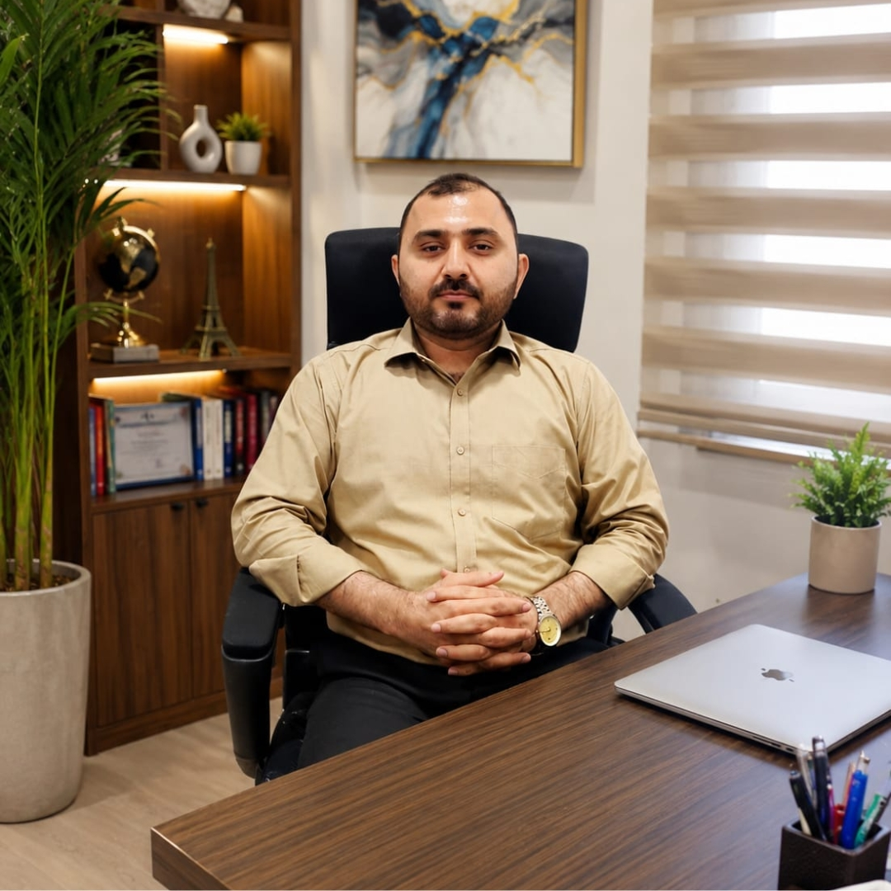

کبھی کبھار کسی کا نام بھول جانا، یا کسی کمرے میں جا کر یہ بھول جانا کہ آپ وہاں کیوں آئے تھے، ہر انسان کے ساتھ ہوتا ہے۔ یہ اس وقت طبی مسئلہ بن جاتا ہے جب یادداشت کی کمزوری روزمرہ کی زندگی میں خلل ڈالنے لگے: جب گھر کے کسی بزرگ کو حالیہ باتیں یاد نہ رہیں، وہ ایک ہی سوال بار بار پوچھیں، یا کسی مانوس سڑک پر راستہ بھول جائیں۔ رحیم یار خان میں اکثر اہل خانہ ہی سب سے پہلے یہ تبدیلی محسوس کرتے ہیں، اور انہی کو اس پر عمل کرنا چاہیے۔
یادداشت کی کمزوری کی بہت سی وجوہات ہوتی ہیں، اور سب مستقل نہیں ہوتیں۔ وٹامن بی 12 کی کمی، تھائیرائیڈ کے مسائل، ڈپریشن، بعض ادویات کے اثرات اور نیند کی کمی سب یادداشت کو متاثر کر سکتے ہیں، اور ان وجوہات کا علاج ممکن ہے۔ ڈیمینشیا اس سے مختلف ہے۔ یہ یادداشت اور سوچنے کی صلاحیت میں آہستہ آہستہ کمی ہے، اور یہ بڑھاپے کا معمولی حصہ نہیں ہے۔ ڈیمینشیا کی سب سے عام وجہ الزائمر کی بیماری ہے، لیکن اس کی دیگر وجوہات بھی ہیں، جن میں فالج یا سر کی چوٹ کے بعد کی حالت شامل ہے۔
انتباہی علامات جاننا ضروری ہے۔ حالیہ واقعات بھول جانا جبکہ پرانی باتیں صاف یاد رہیں، تھوڑے وقت میں ایک ہی سوال یا کہانی دہرانا، کھانا پکانے یا پیسوں کا حساب جیسے مانوس کاموں میں دشواری، مانوس جگہ پر راستہ بھول جانا، صحیح الفاظ نہ ملنا، اور مزاج یا شخصیت میں تبدیلی — یہ سب علامات طبی معائنے کی متقاضی ہیں۔ وجہ جتنی جلدی معلوم ہو، اتنا ہی زیادہ کیا جا سکتا ہے۔
نیورو فزیشن سب سے پہلے مریض اور اہل خانہ سے بات کرتا ہے، کیونکہ اہل خانہ کا بیان اکثر مریض کی نسبت صورتحال کو زیادہ واضح طور پر سامنے لاتا ہے۔ معائنے میں یادداشت، سوچ، اعصاب، طاقت اور ریفلیکسز کی جانچ کی جاتی ہے۔ ضرورت پڑنے پر خون کے ٹیسٹ اور دماغ کا اسکین کروایا جاتا ہے، تاکہ قابل علاج وجہ مل سکے یا تشخیص کی تصدیق ہو۔ ڈیمینشیا کا کوئی ایک ٹیسٹ نہیں ہے، تشخیص پوری صورتحال کو دیکھ کر کی جاتی ہے۔
اگر یادداشت کی کمزوری بڑھ رہی ہو، روزمرہ کی زندگی متاثر ہو رہی ہو، یا اہل خانہ پریشان ہوں، تو یہی وہ وقت ہے جب ڈاکٹر سے رجوع کرنا چاہیے۔ جلد تشخیص کا مطلب ہے کہ صحیح علاج جلد شروع ہو سکتا ہے، اہل خانہ دیکھ بھال کی منصوبہ بندی کر سکتے ہیں، اور دیگر وجوہات کو مسترد یا ان کا علاج کیا جا سکتا ہے۔ کلینک میں ذاتی ملاقات اور آن لائن مشاورت دونوں دستیاب ہیں، اس لیے مدد ان لوگوں کو بھی مل سکتی ہے جو رحیم یار خان سے باہر رہتے ہیں۔
ڈاکٹر حافظ محمد ذیشان، نیورولوجسٹ اور نیوروفزیولوجسٹ (کنسلٹنٹ نیوروفزیشن)، نیشنل نیوروفزیالوجی سینٹر، نیشنل ڈائیگناسٹک کمپلیکس، ہسپتال روڈ، آفیسرز کالونی، رحیم یار خان 64200 میں خدمات انجام دیتے ہیں۔ فون: 0306-8503530۔ اوقات: پیر سے ہفتہ، صبح 9:30 بجے سے دوپہر 1:30 بجے تک اور شام 4:00 بجے سے رات 8:30 بجے تک؛ اتوار کو چھٹی۔ آن لائن مشاورت روزانہ صبح 10:00 بجے سے رات 9:00 بجے تک دستیاب ہے۔ فیس: کلینک میں 1,200 روپے، آن لائن 2,000 روپے۔ کلینک میں این سی ایس، ای ایم جی اور ای ای جی کی سہولت موجود ہے۔